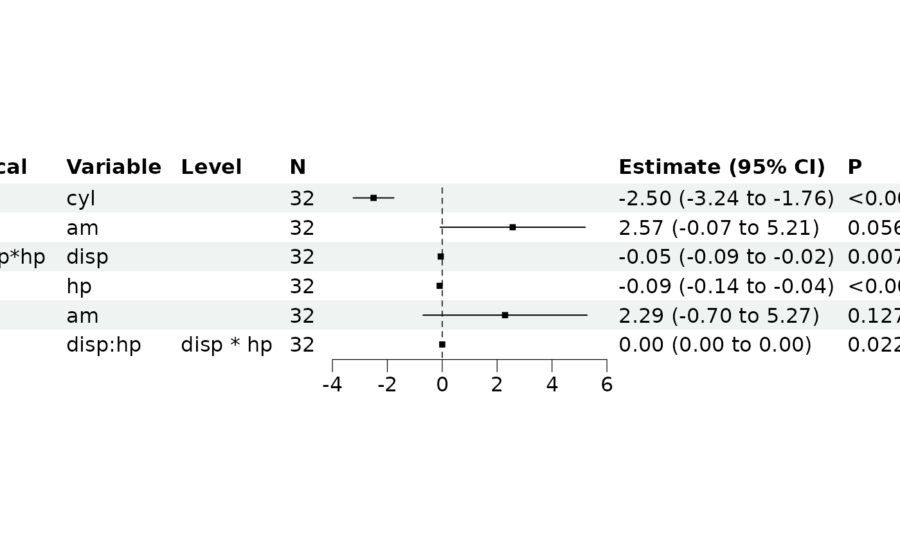
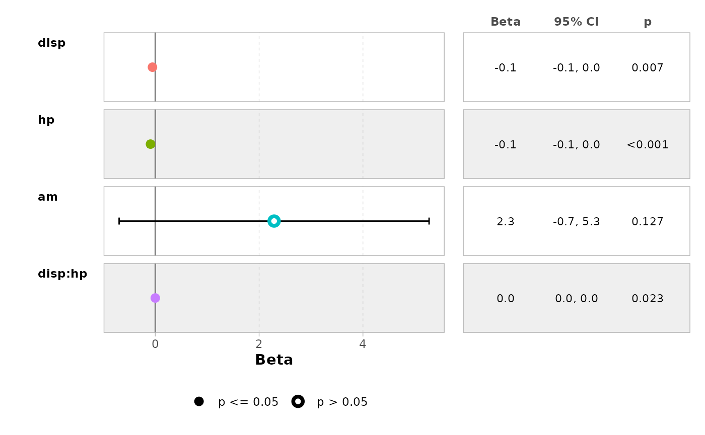
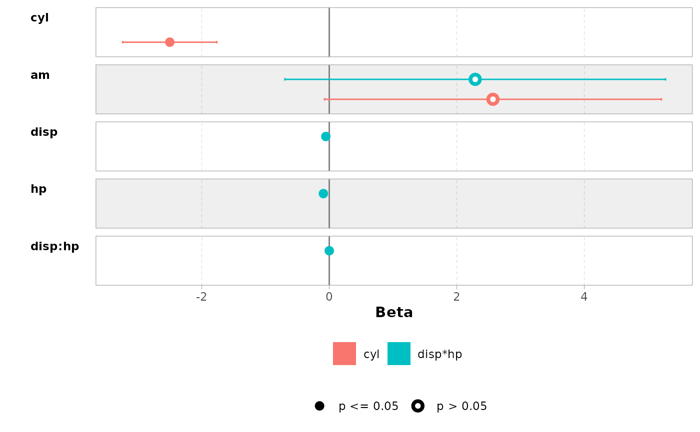

Model Configurations
Shixiang Wang
Central South Universitywangshx@csu.edu.cn
2025-08-10
Source:vignettes/model-config.Rmd
model-config.Rmd
library(bregr)
#> Welcome to 'bregr' package!
#> =======================================================================
#> You are using bregr version 1.1.0
#>
#> Project home : https://github.com/WangLabCSU/bregr
#> Documentation: https://wanglabcsu.github.io/bregr/
#> Cite as : arXiv:2110.14232
#> =======================================================================
#> Interaction Terms
The bregr package provides comprehensive support for the processing and visualization of interaction terms in regression models, provided that the interaction term is inherently supported by the model.
Below is an illustrative example using a linear model:
rv <- br_pipeline(
data = mtcars,
y = "mpg", x = c("cyl", "disp*hp"), x2 = "am",
method = "lm"
)Examine the results:
br_get_results(rv, tidy = TRUE)
#> # A tibble: 6 × 8
#> Focal_variable term estimate std.error statistic p.value conf.low conf.high
#> <chr> <chr> <dbl> <dbl> <dbl> <dbl> <dbl> <dbl>
#> 1 cyl cyl -2.50e+0 0.361 -6.93 1.28e-7 -3.24e+0 -1.76
#> 2 cyl am 2.57e+0 1.29 1.99 5.64e-2 -7.42e-2 5.21
#> 3 disp*hp disp -5.42e-2 0.0186 -2.92 7.06e-3 -9.23e-2 -0.0160
#> 4 disp*hp hp -9.20e-2 0.0244 -3.77 8.16e-4 -1.42e-1 -0.0419
#> 5 disp*hp am 2.29e+0 1.45 1.57 1.27e-1 -6.96e-1 5.27
#> 6 disp*hp disp:hp 2.27e-4 0.0000938 2.42 2.26e-2 3.45e-5 0.000419Visualize the results:
br_show_forest(rv)
Additionally, specified models can be visualized using the functions provided by bregr:
br_show_forest_ggstats(rv, idx = 2)
Or compare them:

Customized GLM Family
For GLM models, the family object can be further customized with
various arguments. By default, bregr directly supports
GLM family functions with their default arguments, which can be viewed
using:
br_avail_methods()
#> [1] "lm" "coxph" "survreg" "clogit"
#> [5] "cch" "binomial" "gaussian" "Gamma"
#> [9] "inverse.gaussian" "poisson" "quasi" "quasibinomial"
#> [13] "quasipoisson" "nls" "aov"However, for alternative GLM configurations, modifications can be made directly. For instance, consider the following example using a quasi-family with specified variance and link functions:
data <- data.frame(
x = rnorm(100)
)
data$y <- rpois(100, exp(1 + data$x))
head(data)
#> x y
#> 1 -1.400043517 0
#> 2 0.255317055 7
#> 3 -2.437263611 0
#> 4 -0.005571287 0
#> 5 0.621552721 3
#> 6 1.148411606 12
rv <- br_pipeline(
data = data,
y = "y", x = "x",
method = 'quasi(variance = "mu", link = "log")'
)
#> Warning: nonstandard method `quasi(variance = "mu", link = "log")` passed to
#> `stats::glm()`, double-check if it's correct
br_get_results(rv, tidy = TRUE)
#> # A tibble: 1 × 8
#> Focal_variable term estimate std.error statistic p.value conf.low conf.high
#> <chr> <chr> <dbl> <dbl> <dbl> <dbl> <dbl> <dbl>
#> 1 x x 0.952 0.0446 21.4 1.14e-38 0.865 1.04This is equivalent to:
glm(y ~ x, data = data, family = quasi(variance = "mu", link = "log")) |>
summary()
#>
#> Call:
#> glm(formula = y ~ x, family = quasi(variance = "mu", link = "log"),
#> data = data)
#>
#> Coefficients:
#> Estimate Std. Error t value Pr(>|t|)
#> (Intercept) 1.06874 0.06587 16.23 <2e-16 ***
#> x 0.95234 0.04456 21.37 <2e-16 ***
#> ---
#> Signif. codes: 0 '***' 0.001 '**' 0.01 '*' 0.05 '.' 0.1 ' ' 1
#>
#> (Dispersion parameter for quasi family taken to be 1.041366)
#>
#> Null deviance: 582.56 on 99 degrees of freedom
#> Residual deviance: 108.46 on 98 degrees of freedom
#> AIC: NA
#>
#> Number of Fisher Scoring iterations: 5